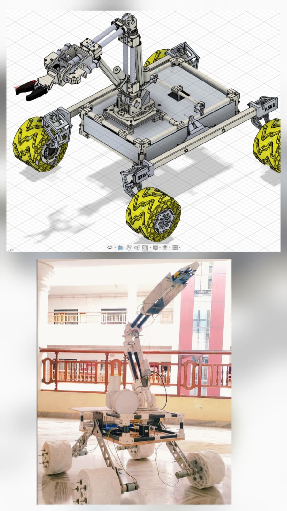
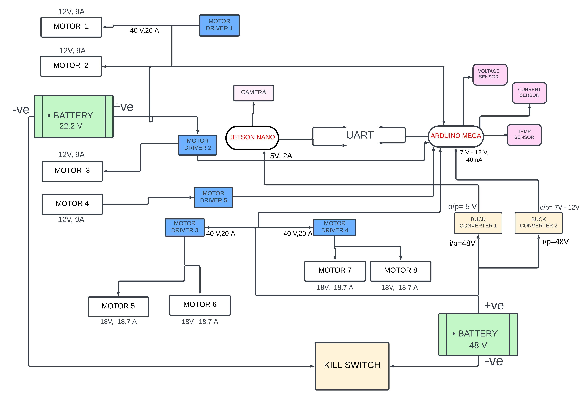

Rover systems · Leadership · Integration
Odyssey Mars Rover.
A multidisciplinary rover program for the Indian Space Research Organization Robotics Challenge, combining uneven-terrain mobility, onboard perception, autonomous navigation, sample manipulation, embedded electronics, and power distribution.
Project Media
Rover hardware and mechanism testing.

Odyssey rover CAD design and physical prototype
Rover drive mechanism demonstration
Detect terrain, obstacles, craters, and samples
Plan rover motion through uneven terrain
Pick, transport, and place samples
Coordinate compute, sensing, actuation, and safety
01 / Problem
Build one rover from many interdependent subsystems.
The challenge required an integrated mobile robotic system capable of uneven-terrain mobility, obstacle and crater detection, sample pick-and-place, onboard perception, autonomous task execution, and emergency response.
The rover also required reliable communication and power distribution across its navigation, perception, manipulation, mobility, and embedded control subsystems.
02 / System Architecture
A modular architecture for mobility, autonomy, and manipulation.
I led the system planning for a modular rover architecture using ROS 2, Jetson Nano computing, Arduino-based sensor interfacing, camera and depth perception, path planning, and a 5-DOF manipulator for sample handling.
03 / Mobility
Design for uneven terrain and mechanical stability.
The mobility system was planned for stable traversal over uneven terrain while preserving ground clearance, traction, and access to the rover electronics.
Drive-system decisions affected mechanical packaging, motor selection, battery requirements, current demand, and the placement of the rover electronics.
04 / Power Distribution
Distribute power safely across propulsion, compute, and sensing.
The power-distribution architecture separates high-current motor loads from the regulated supplies required by the computing and sensing electronics.

Power distribution and Control architecture
Two battery domains support different rover loads. Motor drivers distribute power to the drive and actuator motors, while buck converters generate regulated voltage rails for the Jetson Nano, Arduino Mega, sensors, and supporting electronics.
The Jetson Nano handles camera input and high-level computation. It communicates with the Arduino Mega through UART. The Arduino interfaces with the voltage, current, and temperature sensors used to monitor the electrical system.
A kill switch provides an emergency method for interrupting rover power. This creates a system-level safety layer during integration, testing, and operation.
05 / Perception and Navigation
Connect environmental sensing to rover motion.
The perception stack combined camera and depth information for terrain understanding, obstacle and crater detection, and sample identification.
Navigation planning incorporated A* search, OpenCV, point-cloud processing, coordinate transforms, and ROS 2 interfaces to connect perception results with rover motion.
06 / Sample Manipulation
Pick, transport, and place mission samples.
A 5-DOF manipulator was included for sample handling. The arm architecture required coordination between mechanical design, actuation, perception, motion planning, and the mobile base.
MoveIt2 and TF2 supported manipulator planning, coordinate-frame management, and integration with the rover software stack.
07 / Leadership and Result
Lead a 30-member multidisciplinary robotics team.
I founded the team and led system planning across the mechanical, electrical, embedded, perception, navigation, and manipulation groups.
This required defining subsystem responsibilities, coordinating interfaces, reviewing technical decisions, and maintaining a common rover architecture across the team.
08 / Technologies